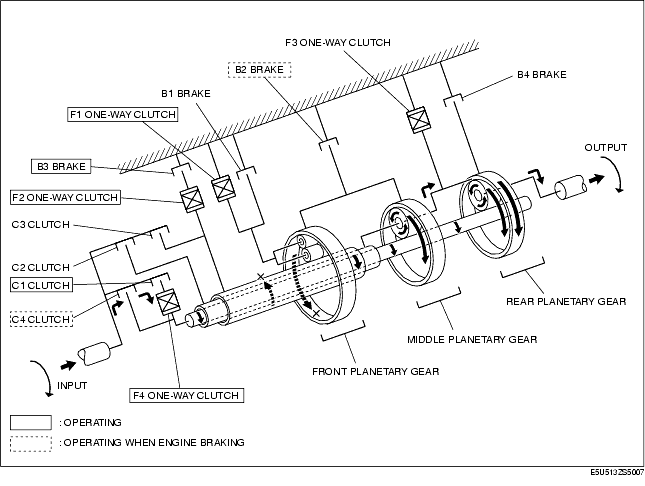
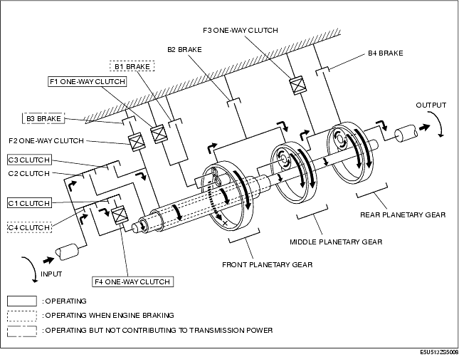

Technical Guide ➭ TRANSMISSION/TRANSAXLE ➭ AUTOMATIC TRANSMISSION[SJ6A-EL] ➭ POWERFLOW OPERATION [SJ6A-EL]
POWERFLOW OPERATION [SJ6A-EL]
id051311320600
{: #wp1059780}
List of operating components
|
Clutch / Brake {: #wp1059846} |
Operation {: #wp1059848} |
|---|---|
|
C1 clutch {: #wp1059788} |
• Engages input shaft and intermediate shaft via F4 one-way clutch. {: #wp1059790} |
|
C2 clutch {: #wp1059863} |
• Engages input shaft and middle planetary carrier. {: #wp1059866} |
|
C3 clutch {: #wp1059870} |
• Engages input shaft and front sun gear. {: #wp1059873} |
|
C4 clutch {: #wp1059944} |
• Engages input shaft and intermediate shaft. {: #wp1059947} |
|
B1 brake {: #wp1059969} |
• Locks rotation of front planetary carrier. {: #wp1059972} |
|
B2 brake {: #wp1059994} |
• Locks rotation of front and middle ring gear. {: #wp1059997} |
|
B3 brake {: #wp1060019} |
• Locks F2 one-way clutch outer race. {: #wp1060022} |
|
B4 brake {: #wp1060045} |
• Locks rotation of rear ring gear. {: #wp1060048} |
|
F1 one-way clutch {: #wp1060070} |
• Locks counterclockwise rotation of front planetary carrier on transmission case. {: #wp1060073} |
|
F2 one-way clutch {: #wp1060096} |
• Locks counterclockwise rotation of front sun gear during B3 brake operation. {: #wp1060099} |
|
F3 one-way clutch {: #wp1060122} |
• Locks counterclockwise rotation of rear ring gear. {: #wp1060125} • Locks counterclockwise rotation of middle planetary carrier. {: #wp1060150} |
|
F4 one-way clutch {: #wp1060158} |
• Locks counterclockwise rotation of intermediate shaft during C1 clutch operation. {: #wp1060161} |
1GR
2GR

3GR

4GR
5GR
6GR